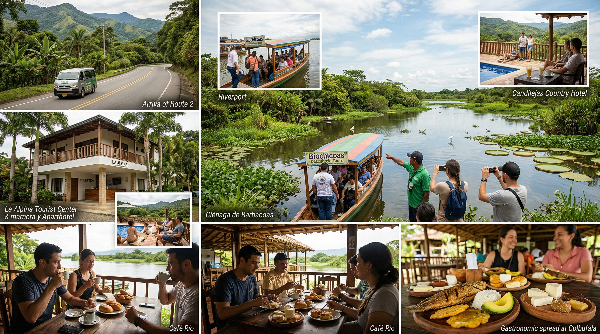
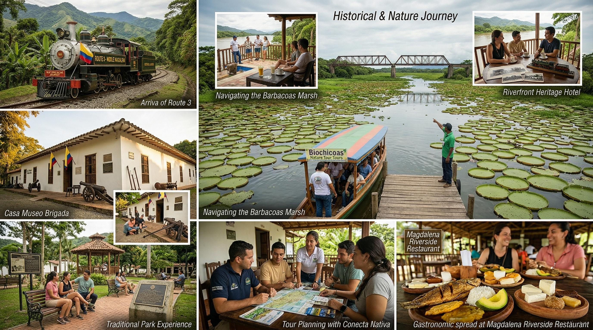

Catálogo
Rutas por el
paisaje ganadero
Itinerarios reales del informe Puerto Berrío – Maceo: duración, presupuesto referencial y acceso al detalle y al mapa georreferenciado.

Patrimonio
Urbano
schedule 3 días
Ruta 1 — Puerto Berrío esencial
Parque, estación del ferrocarril, puente monumental y mesas en el corredor ribereño.
Por persona (aprox.)
$356k – $542k

Agua
schedule 4 días
Ruta 2 — Balneario y Ciénaga
Balneario La Alpina o Candilejas, embarque y Ciénaga de Barbacoas.
$596k – $997k
arrow_forward

Historia
schedule 4 días
$635k – $1.062M
Ruta 3 — Histórico y naturaleza
Brigada, Carrera 1.ª, operadores locales y Ciénaga de Barbacoas.

Ganadería
schedule 5 días
$886k – $1.474M
Ruta 4 — Experiencia ganadera
Cañón Alicante, Ecorrefugio, Maceo, ordeño y talabartería en finca.

Integral
6 días
Ruta 5 — Ruta completa
Une balneario, patrimonio, ciénaga, Ecorrefugio, ganadería y San Juan de Bedout en un solo circuito.
$1.306M – $2.082M
arrow_forward
map Ver todas en el mapa
Imágenes de contexto (ganado, río y territorio rural) vía Pexels — uso ilustrativo.